SMART Indicator Report: Phytoplankton
2 Indicator name
Phytoplankton
Includes variable(s): ANNUAL_CHLOR_A_MEDIAN, ANNUAL_CHLOR_A_RATIO_ANOMALY, ANNUAL_PPD_MEDIAN, ANNUAL_PSC_FMICRO_DIFFERENCE_ANOMALY, ANNUAL_PSC_FMICRO_MEDIAN, ANNUAL_PSC_FNANO_DIFFERENCE_ANOMALY, ANNUAL_PSC_FNANO_MEDIAN, ANNUAL_PSC_FPICO_DIFFERENCE_ANOMALY, ANNUAL_PSC_FPICO_MEDIAN, ANNUAL_PSC_MICRO_MEDIAN, ANNUAL_PSC_MICRO_RATIO_ANOMALY, ANNUAL_PSC_NANO_MEDIAN, ANNUAL_PSC_NANO_RATIO_ANOMALY, ANNUAL_PSC_PICO_MEDIAN, ANNUAL_PSC_PICO_RATIO_ANOMALY, CLIMATOLOGICAL_MONTH_CHLOR_A_MEDIAN, CLIMATOLOGICAL_MONTH_PPD_MEDIAN, CLIMATOLOGICAL_MONTH_PSC_FMICRO_MEDIAN, CLIMATOLOGICAL_MONTH_PSC_FNANO_MEDIAN, CLIMATOLOGICAL_MONTH_PSC_FPICO_MEDIAN, CLIMATOLOGICAL_MONTH_PSC_MICRO_MEDIAN, CLIMATOLOGICAL_MONTH_PSC_NANO_MEDIAN, CLIMATOLOGICAL_MONTH_PSC_PICO_MEDIAN, CLIMATOLOGICAL_WEEK_CHLOR_A_MEDIAN, CLIMATOLOGICAL_WEEK_PPD_MEDIAN, CLIMATOLOGICAL_WEEK_PSC_FMICRO_MEDIAN, CLIMATOLOGICAL_WEEK_PSC_FNANO_MEDIAN, CLIMATOLOGICAL_WEEK_PSC_FPICO_MEDIAN, CLIMATOLOGICAL_WEEK_PSC_MICRO_MEDIAN, CLIMATOLOGICAL_WEEK_PSC_NANO_MEDIAN, CLIMATOLOGICAL_WEEK_PSC_PICO_MEDIAN, LONGTERM_ANNUAL_CHLOR_A_MEDIAN, LONGTERM_ANNUAL_PPD_MEDIAN, LONGTERM_ANNUAL_PSC_FMICRO_MEDIAN, LONGTERM_ANNUAL_PSC_FNANO_MEDIAN, LONGTERM_ANNUAL_PSC_FPICO_MEDIAN, LONGTERM_ANNUAL_PSC_MICRO_MEDIAN, LONGTERM_ANNUAL_PSC_NANO_MEDIAN, LONGTERM_ANNUAL_PSC_PICO_MEDIAN, MONTHLY_CHLOR_A_MEDIAN, MONTHLY_CHLOR_A_RATIO_ANOMALY, MONTHLY_PPD_MEDIAN, MONTHLY_PPD_RATIO_ANOMALY, MONTHLY_PSC_FMICRO_DIFFERENCE_ANOMALY, MONTHLY_PSC_FMICRO_MEDIAN, MONTHLY_PSC_FNANO_DIFFERENCE_ANOMALY, MONTHLY_PSC_FNANO_MEDIAN, MONTHLY_PSC_FPICO_DIFFERENCE_ANOMALY, MONTHLY_PSC_FPICO_MEDIAN, MONTHLY_PSC_MICRO_MEDIAN, MONTHLY_PSC_MICRO_RATIO_ANOMALY, MONTHLY_PSC_NANO_MEDIAN, MONTHLY_PSC_NANO_RATIO_ANOMALY, MONTHLY_PSC_PICO_MEDIAN, MONTHLY_PSC_PICO_RATIO_ANOMALY, WEEKLY_CHLOR_A_MEDIAN, WEEKLY_CHLOR_A_RATIO_ANOMALY, WEEKLY_PPD_MEDIAN, WEEKLY_PPD_RATIO_ANOMALY, WEEKLY_PSC_FMICRO_DIFFERENCE_ANOMALY, WEEKLY_PSC_FMICRO_MEDIAN, WEEKLY_PSC_FNANO_DIFFERENCE_ANOMALY, WEEKLY_PSC_FNANO_MEDIAN, WEEKLY_PSC_FPICO_DIFFERENCE_ANOMALY, WEEKLY_PSC_FPICO_MEDIAN, WEEKLY_PSC_MICRO_MEDIAN, WEEKLY_PSC_MICRO_RATIO_ANOMALY, WEEKLY_PSC_NANO_MEDIAN, WEEKLY_PSC_NANO_RATIO_ANOMALY, WEEKLY_PSC_PICO_MEDIAN, WEEKLY_PSC_PICO_RATIO_ANOMALY
3 Indicator brief description
Satellite derived phytoplankton data including chlorophyll concentration, primary production, and phytoplankton size class for the Northeast Continental Shelf and ecological production units.
4 Indicator visualization
The seasonal cycle of phytoplankton biomass typically includes peaks during the winter-spring and fall seasons and minimums during the summer months, however exact bloom timing varies by region. Primary productivity, increases during bloom periods due to increased biomass, but peaks during the summer months when daylight and temperatures are greatest. In 2024, concentrations of chlorophyll a (a proxy for biomass) were above average during the winter-spring and fall bloom periods in all regions. There was no evidence of a repeat of the widespread Tripos muelleri bloom observed in 2023. There was, however, an atypical localized coccolithophore bloom south of Long Island, New York in late June to early July. Mid-Atlantic primary production peaked in early summer in 2024 and was above average in late fall, which is attributed to the above average late fall bloom. Georges Bank fall productivity was also above average due to the abnormally large fall phytoplankton bloom. Conversely, the Gulf of Maine spring bloom accounted for the largest above average spike in that region. The seasonal cycles of phytoplankton size distribution are typically dominated by larger-celled microplankton (> 20 um) during the winter-spring and fall bloom periods, while smaller-celled nanoplankton (0.2-20 um) dominate during the warmer summer months. The smallest phytoplankton group, picoplankton (<0.2 um), represent the smallest fraction of the phytoplankton community in the region. Phytoplankton size class distributions were near average for most of the year, except during the early fall bloom. The 2024 phytoplankton size class distribution was near the seasonal climatology in all regions except during the above average phytoplankton bloom periods. There is high interannual variability of the seasonal phytoplankton cycle. At the monthly scale, MAB chlorophyll and primary production are increasing during January, suggesting that the fall bloom period is extending into early winter. The significant decrease in MAB chlorophyll in September chlorophyll is likely related to warmer temperatures persisting into early fall and increased nutrient limitation. Fall and winter chlorophyll and primary production are increasing on Georges Bank and Gulf of Maine.
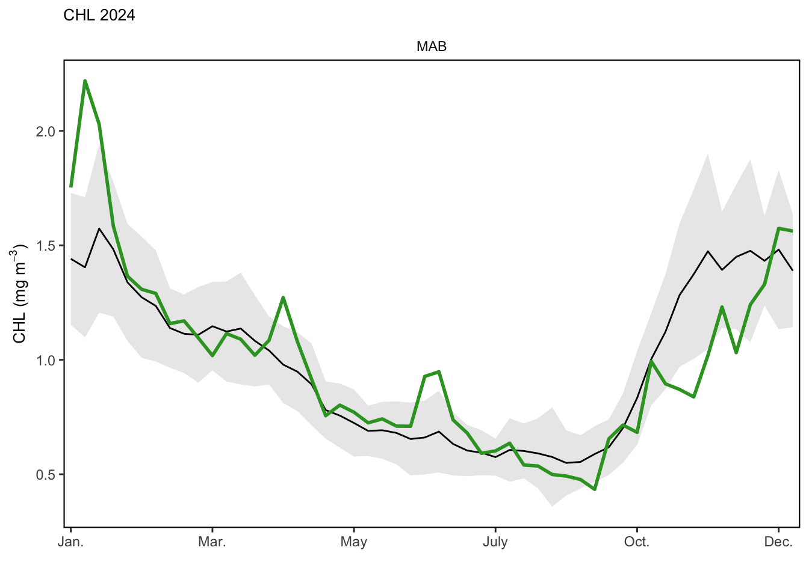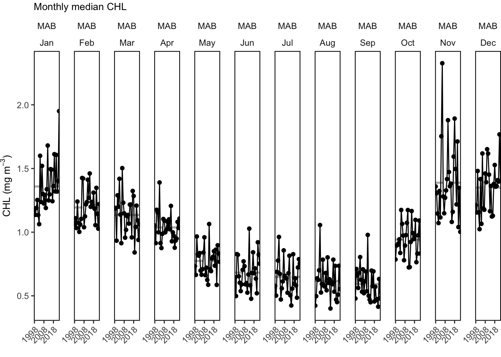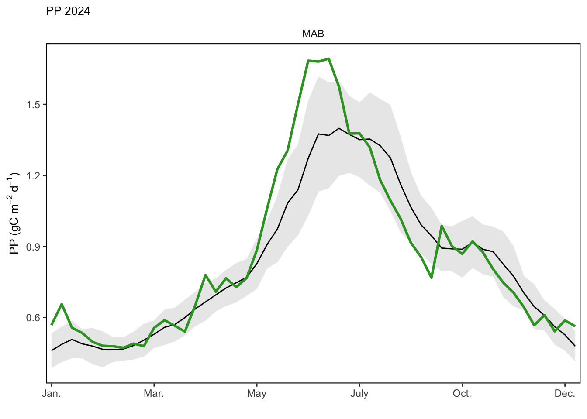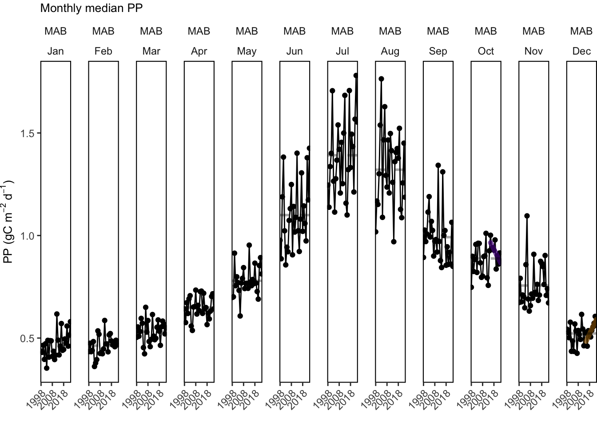
## [1] "Size plots are only available for the weekly scale."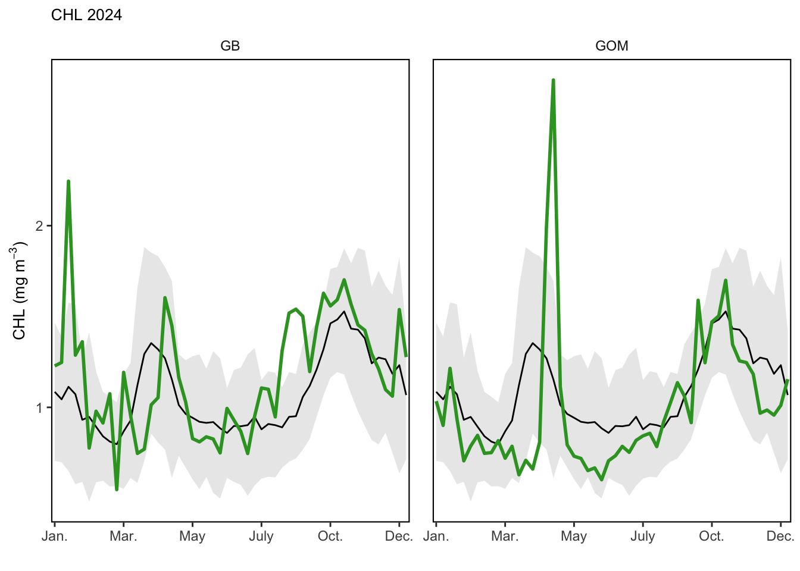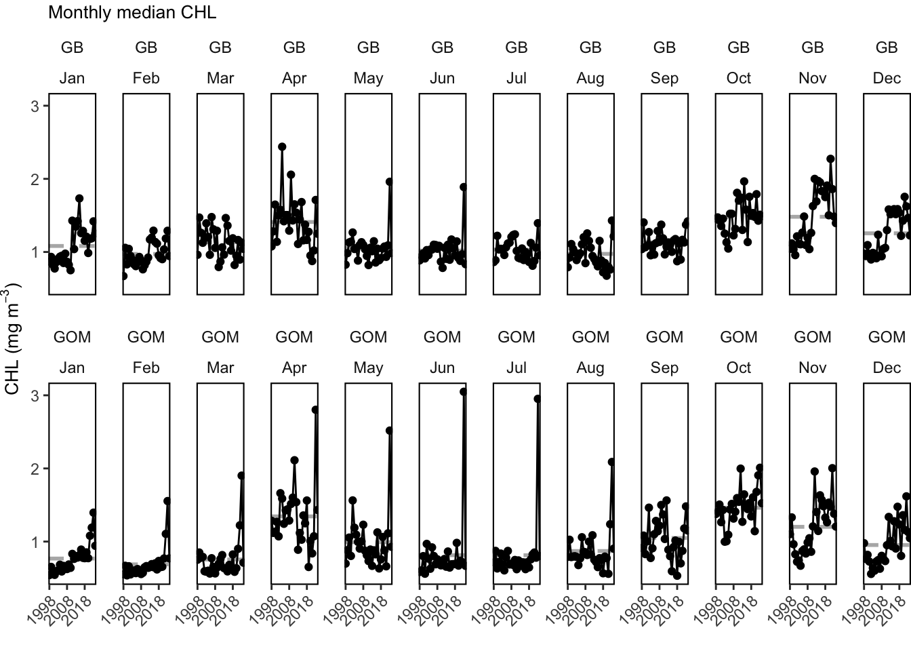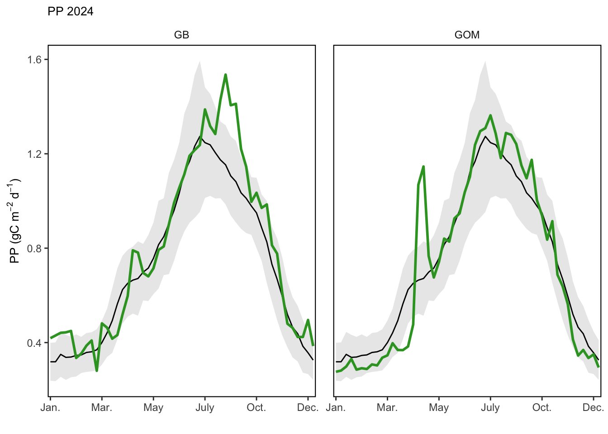 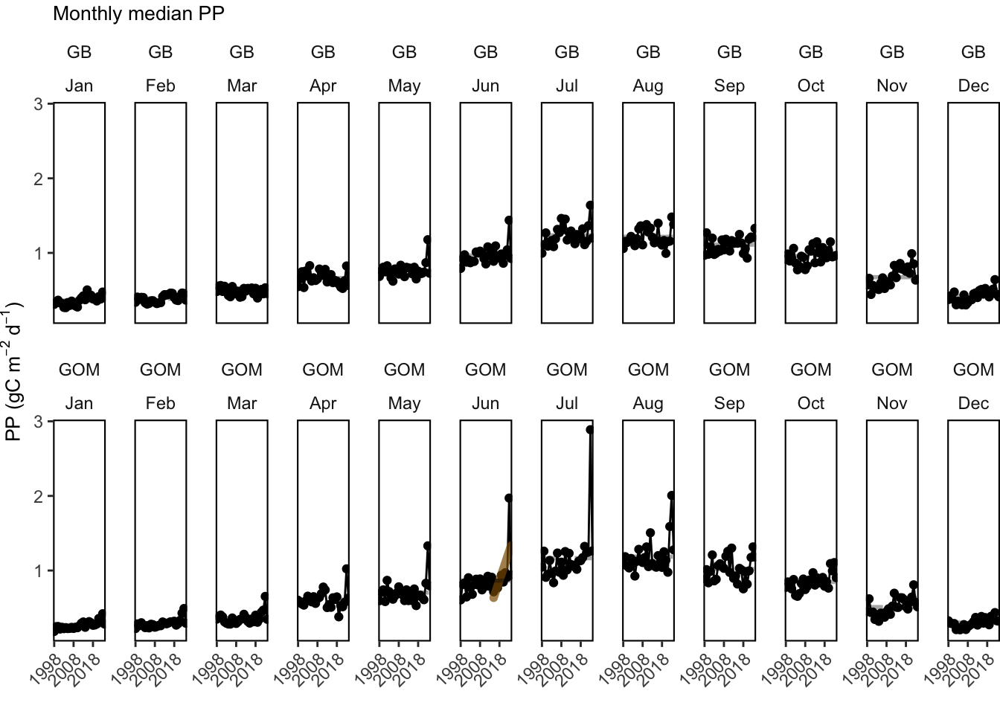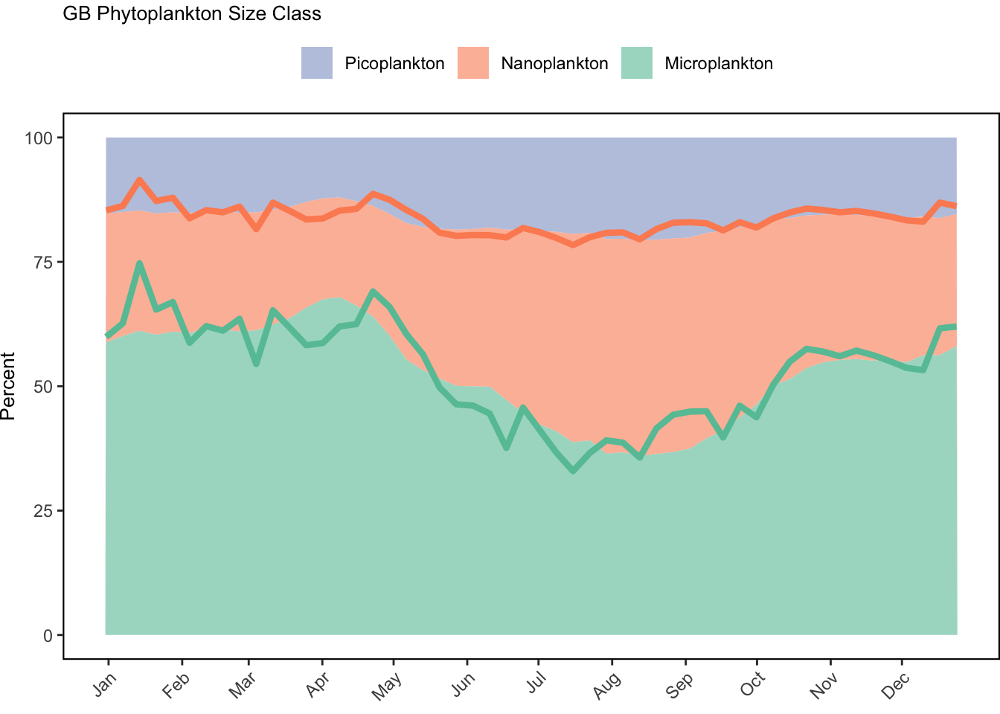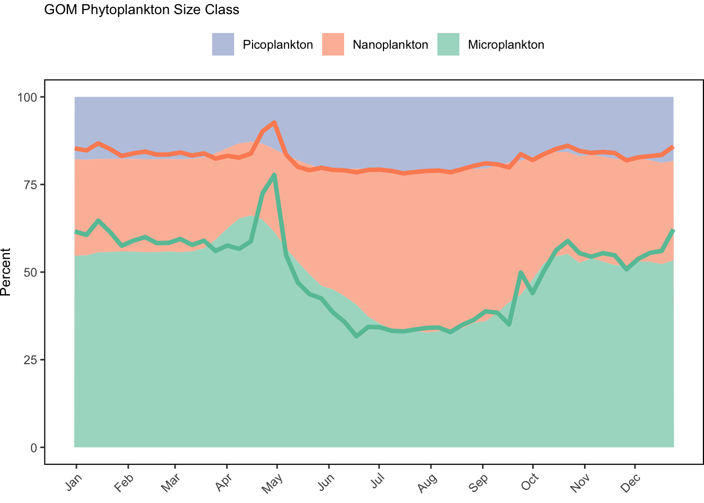
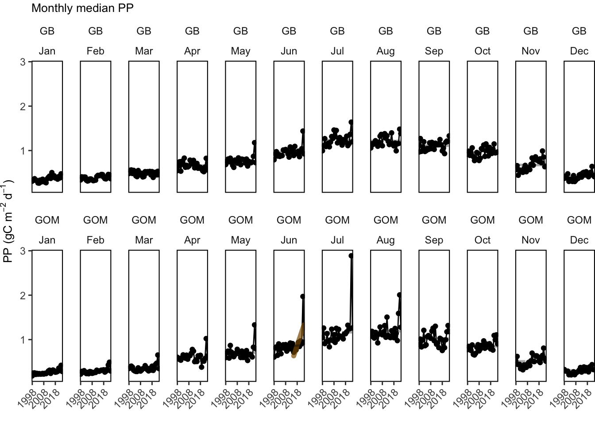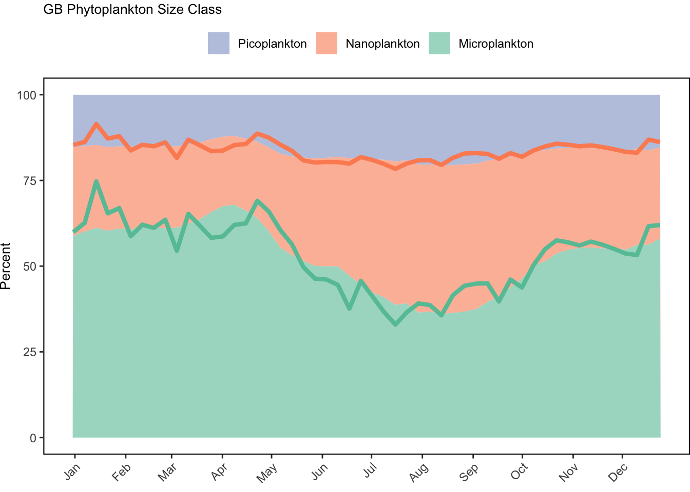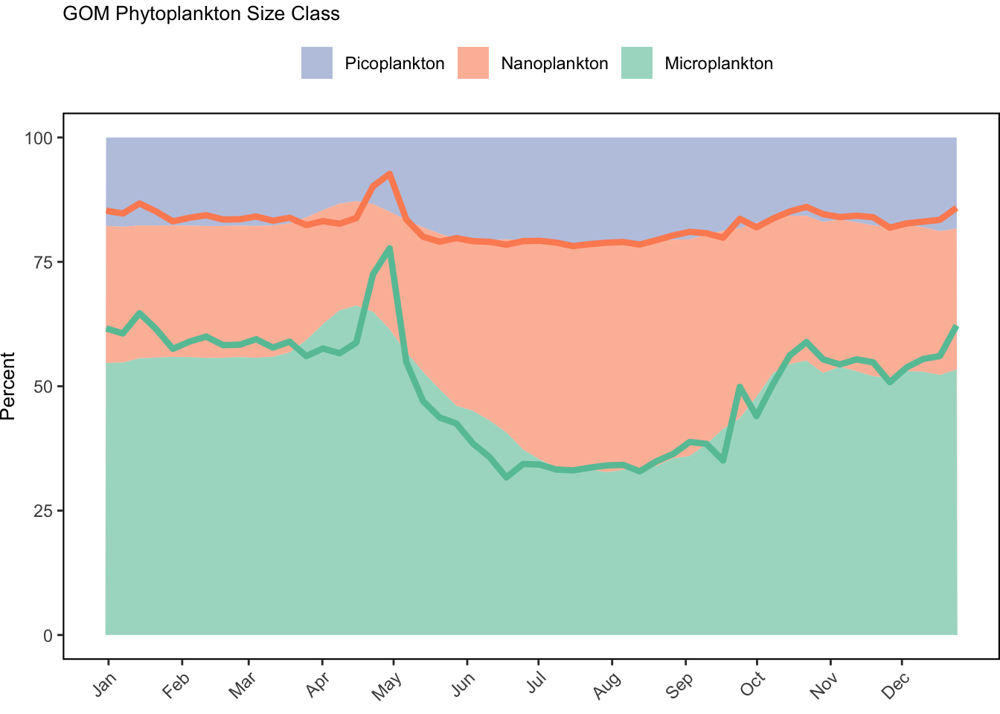
## [1] "Size plots are only available for the weekly scale."
## [1] "Size plots are only available for the weekly scale."5 Indicator documentation
5.1 Are indicators available for others to use (data downloadable)?
## Yes5.1.1 Where can indicators be found?
## Data: https://noaa-edab.github.io/ecodata/index.html
## Description: https://noaa-edab.github.io/catalog/chl_pp.html
## Technical documentation: https://noaa-edab.github.io/tech-doc/chl_pp.html5.1.2 How often are they updated? Are future updates likely?
[need sequential look at datasets for update frequency. Future requires judgement]
5.2 Gather indicator statistics
5.2.1 Units
Indicator | Units |
|---|---|
ANNUAL_CHLOR_A_MEDIAN | mg m^-3 |
ANNUAL_CHLOR_A_RATIO_ANOMALY | mg m^-3 |
ANNUAL_PPD_MEDIAN | gcarbon/m^2/day |
ANNUAL_PSC_FMICRO_DIFFERENCE_ANOMALY | percent |
ANNUAL_PSC_FMICRO_MEDIAN | percent |
ANNUAL_PSC_FNANO_DIFFERENCE_ANOMALY | percent |
ANNUAL_PSC_FNANO_MEDIAN | percent |
ANNUAL_PSC_FPICO_DIFFERENCE_ANOMALY | percent |
ANNUAL_PSC_FPICO_MEDIAN | percent |
ANNUAL_PSC_MICRO_MEDIAN | mg m^-3 |
ANNUAL_PSC_MICRO_RATIO_ANOMALY | mg m^-3 |
ANNUAL_PSC_NANO_MEDIAN | mg m^-3 |
ANNUAL_PSC_NANO_RATIO_ANOMALY | mg m^-3 |
ANNUAL_PSC_PICO_MEDIAN | mg m^-3 |
ANNUAL_PSC_PICO_RATIO_ANOMALY | mg m^-3 |
CLIMATOLOGICAL_MONTH_CHLOR_A_MEDIAN | mg m^-3 |
CLIMATOLOGICAL_MONTH_PPD_MEDIAN | gcarbon/m^2/day |
CLIMATOLOGICAL_MONTH_PSC_FMICRO_MEDIAN | percent |
CLIMATOLOGICAL_MONTH_PSC_FNANO_MEDIAN | percent |
CLIMATOLOGICAL_MONTH_PSC_FPICO_MEDIAN | percent |
CLIMATOLOGICAL_MONTH_PSC_MICRO_MEDIAN | mg m^-3 |
CLIMATOLOGICAL_MONTH_PSC_NANO_MEDIAN | mg m^-3 |
CLIMATOLOGICAL_MONTH_PSC_PICO_MEDIAN | mg m^-3 |
CLIMATOLOGICAL_WEEK_CHLOR_A_MEDIAN | mg m^-3 |
CLIMATOLOGICAL_WEEK_PPD_MEDIAN | gcarbon/m^2/day |
CLIMATOLOGICAL_WEEK_PSC_FMICRO_MEDIAN | percent |
CLIMATOLOGICAL_WEEK_PSC_FNANO_MEDIAN | percent |
CLIMATOLOGICAL_WEEK_PSC_FPICO_MEDIAN | percent |
CLIMATOLOGICAL_WEEK_PSC_MICRO_MEDIAN | mg m^-3 |
CLIMATOLOGICAL_WEEK_PSC_NANO_MEDIAN | mg m^-3 |
CLIMATOLOGICAL_WEEK_PSC_PICO_MEDIAN | mg m^-3 |
LONGTERM_ANNUAL_CHLOR_A_MEDIAN | mg m^-3 |
LONGTERM_ANNUAL_PPD_MEDIAN | gcarbon/m^2/day |
LONGTERM_ANNUAL_PSC_FMICRO_MEDIAN | percent |
LONGTERM_ANNUAL_PSC_FNANO_MEDIAN | percent |
LONGTERM_ANNUAL_PSC_FPICO_MEDIAN | percent |
LONGTERM_ANNUAL_PSC_MICRO_MEDIAN | mg m^-3 |
LONGTERM_ANNUAL_PSC_NANO_MEDIAN | mg m^-3 |
LONGTERM_ANNUAL_PSC_PICO_MEDIAN | mg m^-3 |
MONTHLY_CHLOR_A_MEDIAN | mg m^-3 |
MONTHLY_CHLOR_A_RATIO_ANOMALY | mg m^-3 |
MONTHLY_PPD_MEDIAN | gcarbon/m^2/day |
MONTHLY_PPD_RATIO_ANOMALY | gcarbon/m^2/day |
MONTHLY_PSC_FMICRO_DIFFERENCE_ANOMALY | percent |
MONTHLY_PSC_FMICRO_MEDIAN | percent |
MONTHLY_PSC_FNANO_DIFFERENCE_ANOMALY | percent |
MONTHLY_PSC_FNANO_MEDIAN | percent |
MONTHLY_PSC_FPICO_DIFFERENCE_ANOMALY | percent |
MONTHLY_PSC_FPICO_MEDIAN | percent |
MONTHLY_PSC_MICRO_MEDIAN | mg m^-3 |
MONTHLY_PSC_MICRO_RATIO_ANOMALY | mg m^-3 |
MONTHLY_PSC_NANO_MEDIAN | mg m^-3 |
MONTHLY_PSC_NANO_RATIO_ANOMALY | mg m^-3 |
MONTHLY_PSC_PICO_MEDIAN | mg m^-3 |
MONTHLY_PSC_PICO_RATIO_ANOMALY | mg m^-3 |
WEEKLY_CHLOR_A_MEDIAN | mg m^-3 |
WEEKLY_CHLOR_A_RATIO_ANOMALY | mg m^-3 |
WEEKLY_PPD_MEDIAN | gcarbon/m^2/day |
WEEKLY_PPD_RATIO_ANOMALY | gcarbon/m^2/day |
WEEKLY_PSC_FMICRO_DIFFERENCE_ANOMALY | percent |
WEEKLY_PSC_FMICRO_MEDIAN | percent |
WEEKLY_PSC_FNANO_DIFFERENCE_ANOMALY | percent |
WEEKLY_PSC_FNANO_MEDIAN | percent |
WEEKLY_PSC_FPICO_DIFFERENCE_ANOMALY | percent |
WEEKLY_PSC_FPICO_MEDIAN | percent |
WEEKLY_PSC_MICRO_MEDIAN | mg m^-3 |
WEEKLY_PSC_MICRO_RATIO_ANOMALY | mg m^-3 |
WEEKLY_PSC_NANO_MEDIAN | mg m^-3 |
WEEKLY_PSC_NANO_RATIO_ANOMALY | mg m^-3 |
WEEKLY_PSC_PICO_MEDIAN | mg m^-3 |
WEEKLY_PSC_PICO_RATIO_ANOMALY | mg m^-3 |
5.2.2 Length of time series, start and end date, periodicity
General overview: Daily, weekly, monthly, annual, climatology (1998 to 2020)
Indicator specifics:
Indicator | EPU | StartYear | EndYear | NumYears | MissingYears |
|---|---|---|---|---|---|
ANNUAL_CHLOR_A_MEDIAN | GB | 1998 | 2024 | 27 | 0 |
ANNUAL_CHLOR_A_MEDIAN | GOM | 1998 | 2024 | 27 | 0 |
ANNUAL_CHLOR_A_MEDIAN | MAB | 1998 | 2024 | 27 | 0 |
ANNUAL_CHLOR_A_RATIO_ANOMALY | GB | 1998 | 2024 | 27 | 0 |
ANNUAL_CHLOR_A_RATIO_ANOMALY | GOM | 1998 | 2024 | 27 | 0 |
ANNUAL_CHLOR_A_RATIO_ANOMALY | MAB | 1998 | 2024 | 27 | 0 |
ANNUAL_PPD_MEDIAN | GB | 1998 | 2024 | 27 | 0 |
ANNUAL_PPD_MEDIAN | GOM | 1998 | 2024 | 27 | 0 |
ANNUAL_PPD_MEDIAN | MAB | 1998 | 2024 | 27 | 0 |
ANNUAL_PSC_FMICRO_DIFFERENCE_ANOMALY | GB | 1998 | 2024 | 27 | 0 |
ANNUAL_PSC_FMICRO_DIFFERENCE_ANOMALY | GOM | 1998 | 2024 | 27 | 0 |
ANNUAL_PSC_FMICRO_DIFFERENCE_ANOMALY | MAB | 1998 | 2024 | 27 | 0 |
ANNUAL_PSC_FMICRO_MEDIAN | GB | 1998 | 2024 | 27 | 0 |
ANNUAL_PSC_FMICRO_MEDIAN | GOM | 1998 | 2024 | 27 | 0 |
ANNUAL_PSC_FMICRO_MEDIAN | MAB | 1998 | 2024 | 27 | 0 |
ANNUAL_PSC_FNANO_DIFFERENCE_ANOMALY | GB | 1998 | 2024 | 27 | 0 |
ANNUAL_PSC_FNANO_DIFFERENCE_ANOMALY | GOM | 1998 | 2024 | 27 | 0 |
ANNUAL_PSC_FNANO_DIFFERENCE_ANOMALY | MAB | 1998 | 2024 | 27 | 0 |
ANNUAL_PSC_FNANO_MEDIAN | GB | 1998 | 2024 | 27 | 0 |
ANNUAL_PSC_FNANO_MEDIAN | GOM | 1998 | 2024 | 27 | 0 |
ANNUAL_PSC_FNANO_MEDIAN | MAB | 1998 | 2024 | 27 | 0 |
ANNUAL_PSC_FPICO_DIFFERENCE_ANOMALY | GB | 1998 | 2024 | 27 | 0 |
ANNUAL_PSC_FPICO_DIFFERENCE_ANOMALY | GOM | 1998 | 2024 | 27 | 0 |
ANNUAL_PSC_FPICO_DIFFERENCE_ANOMALY | MAB | 1998 | 2024 | 27 | 0 |
ANNUAL_PSC_FPICO_MEDIAN | GB | 1998 | 2024 | 27 | 0 |
ANNUAL_PSC_FPICO_MEDIAN | GOM | 1998 | 2024 | 27 | 0 |
ANNUAL_PSC_FPICO_MEDIAN | MAB | 1998 | 2024 | 27 | 0 |
ANNUAL_PSC_MICRO_MEDIAN | GB | 1998 | 2024 | 27 | 0 |
ANNUAL_PSC_MICRO_MEDIAN | GOM | 1998 | 2024 | 27 | 0 |
ANNUAL_PSC_MICRO_MEDIAN | MAB | 1998 | 2024 | 27 | 0 |
ANNUAL_PSC_MICRO_RATIO_ANOMALY | GB | 1998 | 2024 | 27 | 0 |
ANNUAL_PSC_MICRO_RATIO_ANOMALY | GOM | 1998 | 2024 | 27 | 0 |
ANNUAL_PSC_MICRO_RATIO_ANOMALY | MAB | 1998 | 2024 | 27 | 0 |
ANNUAL_PSC_NANO_MEDIAN | GB | 1998 | 2024 | 27 | 0 |
ANNUAL_PSC_NANO_MEDIAN | GOM | 1998 | 2024 | 27 | 0 |
ANNUAL_PSC_NANO_MEDIAN | MAB | 1998 | 2024 | 27 | 0 |
ANNUAL_PSC_NANO_RATIO_ANOMALY | GB | 1998 | 2024 | 27 | 0 |
ANNUAL_PSC_NANO_RATIO_ANOMALY | GOM | 1998 | 2024 | 27 | 0 |
ANNUAL_PSC_NANO_RATIO_ANOMALY | MAB | 1998 | 2024 | 27 | 0 |
ANNUAL_PSC_PICO_MEDIAN | GB | 1998 | 2024 | 27 | 0 |
ANNUAL_PSC_PICO_MEDIAN | GOM | 1998 | 2024 | 27 | 0 |
ANNUAL_PSC_PICO_MEDIAN | MAB | 1998 | 2024 | 27 | 0 |
ANNUAL_PSC_PICO_RATIO_ANOMALY | GB | 1998 | 2024 | 27 | 0 |
ANNUAL_PSC_PICO_RATIO_ANOMALY | GOM | 1998 | 2024 | 27 | 0 |
ANNUAL_PSC_PICO_RATIO_ANOMALY | MAB | 1998 | 2024 | 27 | 0 |
CLIMATOLOGICAL_MONTH_CHLOR_A_MEDIAN | GB | 119982020 | 1219972020 | 12 | 1099989989 |
CLIMATOLOGICAL_MONTH_CHLOR_A_MEDIAN | GOM | 119982020 | 1219972020 | 12 | 1099989989 |
CLIMATOLOGICAL_MONTH_CHLOR_A_MEDIAN | MAB | 119982020 | 1219972020 | 12 | 1099989989 |
CLIMATOLOGICAL_MONTH_PPD_MEDIAN | GB | 119982020 | 1219972020 | 12 | 1099989989 |
CLIMATOLOGICAL_MONTH_PPD_MEDIAN | GOM | 119982020 | 1219972020 | 12 | 1099989989 |
CLIMATOLOGICAL_MONTH_PPD_MEDIAN | MAB | 119982020 | 1219972020 | 12 | 1099989989 |
CLIMATOLOGICAL_MONTH_PSC_FMICRO_MEDIAN | GB | 119982020 | 1219972020 | 12 | 1099989989 |
CLIMATOLOGICAL_MONTH_PSC_FMICRO_MEDIAN | GOM | 119982020 | 1219972020 | 12 | 1099989989 |
CLIMATOLOGICAL_MONTH_PSC_FMICRO_MEDIAN | MAB | 119982020 | 1219972020 | 12 | 1099989989 |
CLIMATOLOGICAL_MONTH_PSC_FNANO_MEDIAN | GB | 119982020 | 1219972020 | 12 | 1099989989 |
CLIMATOLOGICAL_MONTH_PSC_FNANO_MEDIAN | GOM | 119982020 | 1219972020 | 12 | 1099989989 |
CLIMATOLOGICAL_MONTH_PSC_FNANO_MEDIAN | MAB | 119982020 | 1219972020 | 12 | 1099989989 |
CLIMATOLOGICAL_MONTH_PSC_FPICO_MEDIAN | GB | 119982020 | 1219972020 | 12 | 1099989989 |
CLIMATOLOGICAL_MONTH_PSC_FPICO_MEDIAN | GOM | 119982020 | 1219972020 | 12 | 1099989989 |
CLIMATOLOGICAL_MONTH_PSC_FPICO_MEDIAN | MAB | 119982020 | 1219972020 | 12 | 1099989989 |
CLIMATOLOGICAL_MONTH_PSC_MICRO_MEDIAN | GB | 119982020 | 1219972020 | 12 | 1099989989 |
CLIMATOLOGICAL_MONTH_PSC_MICRO_MEDIAN | GOM | 119982020 | 1219972020 | 12 | 1099989989 |
CLIMATOLOGICAL_MONTH_PSC_MICRO_MEDIAN | MAB | 119982020 | 1219972020 | 12 | 1099989989 |
CLIMATOLOGICAL_MONTH_PSC_NANO_MEDIAN | GB | 119982020 | 1219972020 | 12 | 1099989989 |
CLIMATOLOGICAL_MONTH_PSC_NANO_MEDIAN | GOM | 119982020 | 1219972020 | 12 | 1099989989 |
CLIMATOLOGICAL_MONTH_PSC_NANO_MEDIAN | MAB | 119982020 | 1219972020 | 12 | 1099989989 |
CLIMATOLOGICAL_MONTH_PSC_PICO_MEDIAN | GB | 119982020 | 1219972020 | 12 | 1099989989 |
CLIMATOLOGICAL_MONTH_PSC_PICO_MEDIAN | GOM | 119982020 | 1219972020 | 12 | 1099989989 |
CLIMATOLOGICAL_MONTH_PSC_PICO_MEDIAN | MAB | 119982020 | 1219972020 | 12 | 1099989989 |
CLIMATOLOGICAL_WEEK_CHLOR_A_MEDIAN | GB | 119982020 | 5219972020 | 52 | 5099989949 |
CLIMATOLOGICAL_WEEK_CHLOR_A_MEDIAN | GOM | 119982020 | 5219972020 | 52 | 5099989949 |
CLIMATOLOGICAL_WEEK_CHLOR_A_MEDIAN | MAB | 119982020 | 5219972020 | 52 | 5099989949 |
CLIMATOLOGICAL_WEEK_PPD_MEDIAN | GB | 119982020 | 5219972020 | 52 | 5099989949 |
CLIMATOLOGICAL_WEEK_PPD_MEDIAN | GOM | 119982020 | 5219972020 | 52 | 5099989949 |
CLIMATOLOGICAL_WEEK_PPD_MEDIAN | MAB | 119982020 | 5219972020 | 52 | 5099989949 |
CLIMATOLOGICAL_WEEK_PSC_FMICRO_MEDIAN | GB | 119982020 | 5219972020 | 52 | 5099989949 |
CLIMATOLOGICAL_WEEK_PSC_FMICRO_MEDIAN | GOM | 119982020 | 5219972020 | 52 | 5099989949 |
CLIMATOLOGICAL_WEEK_PSC_FMICRO_MEDIAN | MAB | 119982020 | 5219972020 | 52 | 5099989949 |
CLIMATOLOGICAL_WEEK_PSC_FNANO_MEDIAN | GB | 119982020 | 5219972020 | 52 | 5099989949 |
CLIMATOLOGICAL_WEEK_PSC_FNANO_MEDIAN | GOM | 119982020 | 5219972020 | 52 | 5099989949 |
CLIMATOLOGICAL_WEEK_PSC_FNANO_MEDIAN | MAB | 119982020 | 5219972020 | 52 | 5099989949 |
CLIMATOLOGICAL_WEEK_PSC_FPICO_MEDIAN | GB | 119982020 | 5219972020 | 52 | 5099989949 |
CLIMATOLOGICAL_WEEK_PSC_FPICO_MEDIAN | GOM | 119982020 | 5219972020 | 52 | 5099989949 |
CLIMATOLOGICAL_WEEK_PSC_FPICO_MEDIAN | MAB | 119982020 | 5219972020 | 52 | 5099989949 |
CLIMATOLOGICAL_WEEK_PSC_MICRO_MEDIAN | GB | 119982020 | 5219972020 | 52 | 5099989949 |
CLIMATOLOGICAL_WEEK_PSC_MICRO_MEDIAN | GOM | 119982020 | 5219972020 | 52 | 5099989949 |
CLIMATOLOGICAL_WEEK_PSC_MICRO_MEDIAN | MAB | 119982020 | 5219972020 | 52 | 5099989949 |
CLIMATOLOGICAL_WEEK_PSC_NANO_MEDIAN | GB | 119982020 | 5219972020 | 52 | 5099989949 |
CLIMATOLOGICAL_WEEK_PSC_NANO_MEDIAN | GOM | 119982020 | 5219972020 | 52 | 5099989949 |
CLIMATOLOGICAL_WEEK_PSC_NANO_MEDIAN | MAB | 119982020 | 5219972020 | 52 | 5099989949 |
CLIMATOLOGICAL_WEEK_PSC_PICO_MEDIAN | GB | 119982020 | 5219972020 | 52 | 5099989949 |
CLIMATOLOGICAL_WEEK_PSC_PICO_MEDIAN | GOM | 119982020 | 5219972020 | 52 | 5099989949 |
CLIMATOLOGICAL_WEEK_PSC_PICO_MEDIAN | MAB | 119982020 | 5219972020 | 52 | 5099989949 |
LONGTERM_ANNUAL_CHLOR_A_MEDIAN | GB | 19982020 | 19982020 | 1 | 0 |
LONGTERM_ANNUAL_CHLOR_A_MEDIAN | GOM | 19982020 | 19982020 | 1 | 0 |
LONGTERM_ANNUAL_CHLOR_A_MEDIAN | MAB | 19982020 | 19982020 | 1 | 0 |
LONGTERM_ANNUAL_PPD_MEDIAN | GB | 19982020 | 19982020 | 1 | 0 |
LONGTERM_ANNUAL_PPD_MEDIAN | GOM | 19982020 | 19982020 | 1 | 0 |
LONGTERM_ANNUAL_PPD_MEDIAN | MAB | 19982020 | 19982020 | 1 | 0 |
LONGTERM_ANNUAL_PSC_FMICRO_MEDIAN | GB | 19982020 | 19982020 | 1 | 0 |
LONGTERM_ANNUAL_PSC_FMICRO_MEDIAN | GOM | 19982020 | 19982020 | 1 | 0 |
LONGTERM_ANNUAL_PSC_FMICRO_MEDIAN | MAB | 19982020 | 19982020 | 1 | 0 |
LONGTERM_ANNUAL_PSC_FNANO_MEDIAN | GB | 19982020 | 19982020 | 1 | 0 |
LONGTERM_ANNUAL_PSC_FNANO_MEDIAN | GOM | 19982020 | 19982020 | 1 | 0 |
LONGTERM_ANNUAL_PSC_FNANO_MEDIAN | MAB | 19982020 | 19982020 | 1 | 0 |
LONGTERM_ANNUAL_PSC_FPICO_MEDIAN | GB | 19982020 | 19982020 | 1 | 0 |
LONGTERM_ANNUAL_PSC_FPICO_MEDIAN | GOM | 19982020 | 19982020 | 1 | 0 |
LONGTERM_ANNUAL_PSC_FPICO_MEDIAN | MAB | 19982020 | 19982020 | 1 | 0 |
LONGTERM_ANNUAL_PSC_MICRO_MEDIAN | GB | 19982020 | 19982020 | 1 | 0 |
LONGTERM_ANNUAL_PSC_MICRO_MEDIAN | GOM | 19982020 | 19982020 | 1 | 0 |
LONGTERM_ANNUAL_PSC_MICRO_MEDIAN | MAB | 19982020 | 19982020 | 1 | 0 |
LONGTERM_ANNUAL_PSC_NANO_MEDIAN | GB | 19982020 | 19982020 | 1 | 0 |
LONGTERM_ANNUAL_PSC_NANO_MEDIAN | GOM | 19982020 | 19982020 | 1 | 0 |
LONGTERM_ANNUAL_PSC_NANO_MEDIAN | MAB | 19982020 | 19982020 | 1 | 0 |
LONGTERM_ANNUAL_PSC_PICO_MEDIAN | GB | 19982020 | 19982020 | 1 | 0 |
LONGTERM_ANNUAL_PSC_PICO_MEDIAN | GOM | 19982020 | 19982020 | 1 | 0 |
LONGTERM_ANNUAL_PSC_PICO_MEDIAN | MAB | 19982020 | 19982020 | 1 | 0 |
MONTHLY_CHLOR_A_MEDIAN | GB | 199801 | 202412 | 324 | 2288 |
MONTHLY_CHLOR_A_MEDIAN | GOM | 199801 | 202412 | 324 | 2288 |
MONTHLY_CHLOR_A_MEDIAN | MAB | 199801 | 202412 | 324 | 2288 |
MONTHLY_CHLOR_A_RATIO_ANOMALY | GB | 199801 | 202412 | 324 | 2288 |
MONTHLY_CHLOR_A_RATIO_ANOMALY | GOM | 199801 | 202412 | 324 | 2288 |
MONTHLY_CHLOR_A_RATIO_ANOMALY | MAB | 199801 | 202412 | 324 | 2288 |
MONTHLY_PPD_MEDIAN | GB | 199801 | 202412 | 324 | 2288 |
MONTHLY_PPD_MEDIAN | GOM | 199801 | 202412 | 324 | 2288 |
MONTHLY_PPD_MEDIAN | MAB | 199801 | 202412 | 324 | 2288 |
MONTHLY_PPD_RATIO_ANOMALY | GB | 199801 | 202412 | 324 | 2288 |
MONTHLY_PPD_RATIO_ANOMALY | GOM | 199801 | 202412 | 324 | 2288 |
MONTHLY_PPD_RATIO_ANOMALY | MAB | 199801 | 202412 | 324 | 2288 |
MONTHLY_PSC_FMICRO_DIFFERENCE_ANOMALY | GB | 199801 | 202412 | 324 | 2288 |
MONTHLY_PSC_FMICRO_DIFFERENCE_ANOMALY | GOM | 199801 | 202412 | 324 | 2288 |
MONTHLY_PSC_FMICRO_DIFFERENCE_ANOMALY | MAB | 199801 | 202412 | 324 | 2288 |
MONTHLY_PSC_FMICRO_MEDIAN | GB | 199801 | 202412 | 324 | 2288 |
MONTHLY_PSC_FMICRO_MEDIAN | GOM | 199801 | 202412 | 324 | 2288 |
MONTHLY_PSC_FMICRO_MEDIAN | MAB | 199801 | 202412 | 324 | 2288 |
MONTHLY_PSC_FNANO_DIFFERENCE_ANOMALY | GB | 199801 | 202412 | 324 | 2288 |
MONTHLY_PSC_FNANO_DIFFERENCE_ANOMALY | GOM | 199801 | 202412 | 324 | 2288 |
MONTHLY_PSC_FNANO_DIFFERENCE_ANOMALY | MAB | 199801 | 202412 | 324 | 2288 |
MONTHLY_PSC_FNANO_MEDIAN | GB | 199801 | 202412 | 324 | 2288 |
MONTHLY_PSC_FNANO_MEDIAN | GOM | 199801 | 202412 | 324 | 2288 |
MONTHLY_PSC_FNANO_MEDIAN | MAB | 199801 | 202412 | 324 | 2288 |
MONTHLY_PSC_FPICO_DIFFERENCE_ANOMALY | GB | 199801 | 202412 | 324 | 2288 |
MONTHLY_PSC_FPICO_DIFFERENCE_ANOMALY | GOM | 199801 | 202412 | 324 | 2288 |
MONTHLY_PSC_FPICO_DIFFERENCE_ANOMALY | MAB | 199801 | 202412 | 324 | 2288 |
MONTHLY_PSC_FPICO_MEDIAN | GB | 199801 | 202412 | 324 | 2288 |
MONTHLY_PSC_FPICO_MEDIAN | GOM | 199801 | 202412 | 324 | 2288 |
MONTHLY_PSC_FPICO_MEDIAN | MAB | 199801 | 202412 | 324 | 2288 |
MONTHLY_PSC_MICRO_MEDIAN | GB | 199801 | 202412 | 324 | 2288 |
MONTHLY_PSC_MICRO_MEDIAN | GOM | 199801 | 202412 | 324 | 2288 |
MONTHLY_PSC_MICRO_MEDIAN | MAB | 199801 | 202412 | 324 | 2288 |
MONTHLY_PSC_MICRO_RATIO_ANOMALY | GB | 199801 | 202412 | 324 | 2288 |
MONTHLY_PSC_MICRO_RATIO_ANOMALY | GOM | 199801 | 202412 | 324 | 2288 |
MONTHLY_PSC_MICRO_RATIO_ANOMALY | MAB | 199801 | 202412 | 324 | 2288 |
MONTHLY_PSC_NANO_MEDIAN | GB | 199801 | 202412 | 324 | 2288 |
MONTHLY_PSC_NANO_MEDIAN | GOM | 199801 | 202412 | 324 | 2288 |
MONTHLY_PSC_NANO_MEDIAN | MAB | 199801 | 202412 | 324 | 2288 |
MONTHLY_PSC_NANO_RATIO_ANOMALY | GB | 199801 | 202412 | 324 | 2288 |
MONTHLY_PSC_NANO_RATIO_ANOMALY | GOM | 199801 | 202412 | 324 | 2288 |
MONTHLY_PSC_NANO_RATIO_ANOMALY | MAB | 199801 | 202412 | 324 | 2288 |
MONTHLY_PSC_PICO_MEDIAN | GB | 199801 | 202412 | 324 | 2288 |
MONTHLY_PSC_PICO_MEDIAN | GOM | 199801 | 202412 | 324 | 2288 |
MONTHLY_PSC_PICO_MEDIAN | MAB | 199801 | 202412 | 324 | 2288 |
MONTHLY_PSC_PICO_RATIO_ANOMALY | GB | 199801 | 202412 | 324 | 2288 |
MONTHLY_PSC_PICO_RATIO_ANOMALY | GOM | 199801 | 202412 | 324 | 2288 |
MONTHLY_PSC_PICO_RATIO_ANOMALY | MAB | 199801 | 202412 | 324 | 2288 |
WEEKLY_CHLOR_A_MEDIAN | GB | 199801 | 202452 | 1404 | 1248 |
WEEKLY_CHLOR_A_MEDIAN | GOM | 199801 | 202452 | 1404 | 1248 |
WEEKLY_CHLOR_A_MEDIAN | MAB | 199801 | 202452 | 1404 | 1248 |
WEEKLY_CHLOR_A_RATIO_ANOMALY | GB | 199801 | 202452 | 1404 | 1248 |
WEEKLY_CHLOR_A_RATIO_ANOMALY | GOM | 199801 | 202452 | 1404 | 1248 |
WEEKLY_CHLOR_A_RATIO_ANOMALY | MAB | 199801 | 202452 | 1404 | 1248 |
WEEKLY_PPD_MEDIAN | GB | 199801 | 202452 | 1404 | 1248 |
WEEKLY_PPD_MEDIAN | GOM | 199801 | 202452 | 1403 | 1249 |
WEEKLY_PPD_MEDIAN | MAB | 199801 | 202452 | 1404 | 1248 |
WEEKLY_PPD_RATIO_ANOMALY | GB | 199801 | 202452 | 1404 | 1248 |
WEEKLY_PPD_RATIO_ANOMALY | GOM | 199801 | 202452 | 1403 | 1249 |
WEEKLY_PPD_RATIO_ANOMALY | MAB | 199801 | 202452 | 1404 | 1248 |
WEEKLY_PSC_FMICRO_DIFFERENCE_ANOMALY | GB | 199801 | 202452 | 1404 | 1248 |
WEEKLY_PSC_FMICRO_DIFFERENCE_ANOMALY | GOM | 199801 | 202452 | 1404 | 1248 |
WEEKLY_PSC_FMICRO_DIFFERENCE_ANOMALY | MAB | 199801 | 202452 | 1404 | 1248 |
WEEKLY_PSC_FMICRO_MEDIAN | GB | 199801 | 202452 | 1404 | 1248 |
WEEKLY_PSC_FMICRO_MEDIAN | GOM | 199801 | 202452 | 1404 | 1248 |
WEEKLY_PSC_FMICRO_MEDIAN | MAB | 199801 | 202452 | 1404 | 1248 |
WEEKLY_PSC_FNANO_DIFFERENCE_ANOMALY | GB | 199801 | 202452 | 1404 | 1248 |
WEEKLY_PSC_FNANO_DIFFERENCE_ANOMALY | GOM | 199801 | 202452 | 1404 | 1248 |
WEEKLY_PSC_FNANO_DIFFERENCE_ANOMALY | MAB | 199801 | 202452 | 1404 | 1248 |
WEEKLY_PSC_FNANO_MEDIAN | GB | 199801 | 202452 | 1404 | 1248 |
WEEKLY_PSC_FNANO_MEDIAN | GOM | 199801 | 202452 | 1404 | 1248 |
WEEKLY_PSC_FNANO_MEDIAN | MAB | 199801 | 202452 | 1404 | 1248 |
WEEKLY_PSC_FPICO_DIFFERENCE_ANOMALY | GB | 199801 | 202452 | 1404 | 1248 |
WEEKLY_PSC_FPICO_DIFFERENCE_ANOMALY | GOM | 199801 | 202452 | 1404 | 1248 |
WEEKLY_PSC_FPICO_DIFFERENCE_ANOMALY | MAB | 199801 | 202452 | 1404 | 1248 |
WEEKLY_PSC_FPICO_MEDIAN | GB | 199801 | 202452 | 1404 | 1248 |
WEEKLY_PSC_FPICO_MEDIAN | GOM | 199801 | 202452 | 1404 | 1248 |
WEEKLY_PSC_FPICO_MEDIAN | MAB | 199801 | 202452 | 1404 | 1248 |
WEEKLY_PSC_MICRO_MEDIAN | GB | 199801 | 202452 | 1404 | 1248 |
WEEKLY_PSC_MICRO_MEDIAN | GOM | 199801 | 202452 | 1404 | 1248 |
WEEKLY_PSC_MICRO_MEDIAN | MAB | 199801 | 202452 | 1404 | 1248 |
WEEKLY_PSC_MICRO_RATIO_ANOMALY | GB | 199801 | 202452 | 1404 | 1248 |
WEEKLY_PSC_MICRO_RATIO_ANOMALY | GOM | 199801 | 202452 | 1404 | 1248 |
WEEKLY_PSC_MICRO_RATIO_ANOMALY | MAB | 199801 | 202452 | 1404 | 1248 |
WEEKLY_PSC_NANO_MEDIAN | GB | 199801 | 202452 | 1404 | 1248 |
WEEKLY_PSC_NANO_MEDIAN | GOM | 199801 | 202452 | 1404 | 1248 |
WEEKLY_PSC_NANO_MEDIAN | MAB | 199801 | 202452 | 1404 | 1248 |
WEEKLY_PSC_NANO_RATIO_ANOMALY | GB | 199801 | 202452 | 1404 | 1248 |
WEEKLY_PSC_NANO_RATIO_ANOMALY | GOM | 199801 | 202452 | 1404 | 1248 |
WEEKLY_PSC_NANO_RATIO_ANOMALY | MAB | 199801 | 202452 | 1404 | 1248 |
WEEKLY_PSC_PICO_MEDIAN | GB | 199801 | 202452 | 1404 | 1248 |
WEEKLY_PSC_PICO_MEDIAN | GOM | 199801 | 202452 | 1404 | 1248 |
WEEKLY_PSC_PICO_MEDIAN | MAB | 199801 | 202452 | 1404 | 1248 |
WEEKLY_PSC_PICO_RATIO_ANOMALY | GB | 199801 | 202452 | 1404 | 1248 |
WEEKLY_PSC_PICO_RATIO_ANOMALY | GOM | 199801 | 202452 | 1404 | 1248 |
WEEKLY_PSC_PICO_RATIO_ANOMALY | MAB | 199801 | 202452 | 1404 | 1248 |
5.2.3 Spatial location, scale and extent
General overview: By EPU and gridded for the entire shelf
Indicator specifics:
Indicator | EPU |
|---|---|
ANNUAL_CHLOR_A_MEDIAN | GB |
ANNUAL_CHLOR_A_MEDIAN | GOM |
ANNUAL_CHLOR_A_MEDIAN | MAB |
ANNUAL_CHLOR_A_RATIO_ANOMALY | GB |
ANNUAL_CHLOR_A_RATIO_ANOMALY | GOM |
ANNUAL_CHLOR_A_RATIO_ANOMALY | MAB |
ANNUAL_PPD_MEDIAN | GB |
ANNUAL_PPD_MEDIAN | GOM |
ANNUAL_PPD_MEDIAN | MAB |
ANNUAL_PSC_FMICRO_DIFFERENCE_ANOMALY | GB |
ANNUAL_PSC_FMICRO_DIFFERENCE_ANOMALY | GOM |
ANNUAL_PSC_FMICRO_DIFFERENCE_ANOMALY | MAB |
ANNUAL_PSC_FMICRO_MEDIAN | GB |
ANNUAL_PSC_FMICRO_MEDIAN | GOM |
ANNUAL_PSC_FMICRO_MEDIAN | MAB |
ANNUAL_PSC_FNANO_DIFFERENCE_ANOMALY | GB |
ANNUAL_PSC_FNANO_DIFFERENCE_ANOMALY | GOM |
ANNUAL_PSC_FNANO_DIFFERENCE_ANOMALY | MAB |
ANNUAL_PSC_FNANO_MEDIAN | GB |
ANNUAL_PSC_FNANO_MEDIAN | GOM |
ANNUAL_PSC_FNANO_MEDIAN | MAB |
ANNUAL_PSC_FPICO_DIFFERENCE_ANOMALY | GB |
ANNUAL_PSC_FPICO_DIFFERENCE_ANOMALY | GOM |
ANNUAL_PSC_FPICO_DIFFERENCE_ANOMALY | MAB |
ANNUAL_PSC_FPICO_MEDIAN | GB |
ANNUAL_PSC_FPICO_MEDIAN | GOM |
ANNUAL_PSC_FPICO_MEDIAN | MAB |
ANNUAL_PSC_MICRO_MEDIAN | GB |
ANNUAL_PSC_MICRO_MEDIAN | GOM |
ANNUAL_PSC_MICRO_MEDIAN | MAB |
ANNUAL_PSC_MICRO_RATIO_ANOMALY | GB |
ANNUAL_PSC_MICRO_RATIO_ANOMALY | GOM |
ANNUAL_PSC_MICRO_RATIO_ANOMALY | MAB |
ANNUAL_PSC_NANO_MEDIAN | GB |
ANNUAL_PSC_NANO_MEDIAN | GOM |
ANNUAL_PSC_NANO_MEDIAN | MAB |
ANNUAL_PSC_NANO_RATIO_ANOMALY | GB |
ANNUAL_PSC_NANO_RATIO_ANOMALY | GOM |
ANNUAL_PSC_NANO_RATIO_ANOMALY | MAB |
ANNUAL_PSC_PICO_MEDIAN | GB |
ANNUAL_PSC_PICO_MEDIAN | GOM |
ANNUAL_PSC_PICO_MEDIAN | MAB |
ANNUAL_PSC_PICO_RATIO_ANOMALY | GB |
ANNUAL_PSC_PICO_RATIO_ANOMALY | GOM |
ANNUAL_PSC_PICO_RATIO_ANOMALY | MAB |
CLIMATOLOGICAL_MONTH_CHLOR_A_MEDIAN | GB |
CLIMATOLOGICAL_MONTH_CHLOR_A_MEDIAN | GOM |
CLIMATOLOGICAL_MONTH_CHLOR_A_MEDIAN | MAB |
CLIMATOLOGICAL_MONTH_PPD_MEDIAN | GB |
CLIMATOLOGICAL_MONTH_PPD_MEDIAN | GOM |
CLIMATOLOGICAL_MONTH_PPD_MEDIAN | MAB |
CLIMATOLOGICAL_MONTH_PSC_FMICRO_MEDIAN | GB |
CLIMATOLOGICAL_MONTH_PSC_FMICRO_MEDIAN | GOM |
CLIMATOLOGICAL_MONTH_PSC_FMICRO_MEDIAN | MAB |
CLIMATOLOGICAL_MONTH_PSC_FNANO_MEDIAN | GB |
CLIMATOLOGICAL_MONTH_PSC_FNANO_MEDIAN | GOM |
CLIMATOLOGICAL_MONTH_PSC_FNANO_MEDIAN | MAB |
CLIMATOLOGICAL_MONTH_PSC_FPICO_MEDIAN | GB |
CLIMATOLOGICAL_MONTH_PSC_FPICO_MEDIAN | GOM |
CLIMATOLOGICAL_MONTH_PSC_FPICO_MEDIAN | MAB |
CLIMATOLOGICAL_MONTH_PSC_MICRO_MEDIAN | GB |
CLIMATOLOGICAL_MONTH_PSC_MICRO_MEDIAN | GOM |
CLIMATOLOGICAL_MONTH_PSC_MICRO_MEDIAN | MAB |
CLIMATOLOGICAL_MONTH_PSC_NANO_MEDIAN | GB |
CLIMATOLOGICAL_MONTH_PSC_NANO_MEDIAN | GOM |
CLIMATOLOGICAL_MONTH_PSC_NANO_MEDIAN | MAB |
CLIMATOLOGICAL_MONTH_PSC_PICO_MEDIAN | GB |
CLIMATOLOGICAL_MONTH_PSC_PICO_MEDIAN | GOM |
CLIMATOLOGICAL_MONTH_PSC_PICO_MEDIAN | MAB |
CLIMATOLOGICAL_WEEK_CHLOR_A_MEDIAN | GB |
CLIMATOLOGICAL_WEEK_CHLOR_A_MEDIAN | GOM |
CLIMATOLOGICAL_WEEK_CHLOR_A_MEDIAN | MAB |
CLIMATOLOGICAL_WEEK_PPD_MEDIAN | GB |
CLIMATOLOGICAL_WEEK_PPD_MEDIAN | GOM |
CLIMATOLOGICAL_WEEK_PPD_MEDIAN | MAB |
CLIMATOLOGICAL_WEEK_PSC_FMICRO_MEDIAN | GB |
CLIMATOLOGICAL_WEEK_PSC_FMICRO_MEDIAN | GOM |
CLIMATOLOGICAL_WEEK_PSC_FMICRO_MEDIAN | MAB |
CLIMATOLOGICAL_WEEK_PSC_FNANO_MEDIAN | GB |
CLIMATOLOGICAL_WEEK_PSC_FNANO_MEDIAN | GOM |
CLIMATOLOGICAL_WEEK_PSC_FNANO_MEDIAN | MAB |
CLIMATOLOGICAL_WEEK_PSC_FPICO_MEDIAN | GB |
CLIMATOLOGICAL_WEEK_PSC_FPICO_MEDIAN | GOM |
CLIMATOLOGICAL_WEEK_PSC_FPICO_MEDIAN | MAB |
CLIMATOLOGICAL_WEEK_PSC_MICRO_MEDIAN | GB |
CLIMATOLOGICAL_WEEK_PSC_MICRO_MEDIAN | GOM |
CLIMATOLOGICAL_WEEK_PSC_MICRO_MEDIAN | MAB |
CLIMATOLOGICAL_WEEK_PSC_NANO_MEDIAN | GB |
CLIMATOLOGICAL_WEEK_PSC_NANO_MEDIAN | GOM |
CLIMATOLOGICAL_WEEK_PSC_NANO_MEDIAN | MAB |
CLIMATOLOGICAL_WEEK_PSC_PICO_MEDIAN | GB |
CLIMATOLOGICAL_WEEK_PSC_PICO_MEDIAN | GOM |
CLIMATOLOGICAL_WEEK_PSC_PICO_MEDIAN | MAB |
LONGTERM_ANNUAL_CHLOR_A_MEDIAN | GB |
LONGTERM_ANNUAL_CHLOR_A_MEDIAN | GOM |
LONGTERM_ANNUAL_CHLOR_A_MEDIAN | MAB |
LONGTERM_ANNUAL_PPD_MEDIAN | GB |
LONGTERM_ANNUAL_PPD_MEDIAN | GOM |
LONGTERM_ANNUAL_PPD_MEDIAN | MAB |
LONGTERM_ANNUAL_PSC_FMICRO_MEDIAN | GB |
LONGTERM_ANNUAL_PSC_FMICRO_MEDIAN | GOM |
LONGTERM_ANNUAL_PSC_FMICRO_MEDIAN | MAB |
LONGTERM_ANNUAL_PSC_FNANO_MEDIAN | GB |
LONGTERM_ANNUAL_PSC_FNANO_MEDIAN | GOM |
LONGTERM_ANNUAL_PSC_FNANO_MEDIAN | MAB |
LONGTERM_ANNUAL_PSC_FPICO_MEDIAN | GB |
LONGTERM_ANNUAL_PSC_FPICO_MEDIAN | GOM |
LONGTERM_ANNUAL_PSC_FPICO_MEDIAN | MAB |
LONGTERM_ANNUAL_PSC_MICRO_MEDIAN | GB |
LONGTERM_ANNUAL_PSC_MICRO_MEDIAN | GOM |
LONGTERM_ANNUAL_PSC_MICRO_MEDIAN | MAB |
LONGTERM_ANNUAL_PSC_NANO_MEDIAN | GB |
LONGTERM_ANNUAL_PSC_NANO_MEDIAN | GOM |
LONGTERM_ANNUAL_PSC_NANO_MEDIAN | MAB |
LONGTERM_ANNUAL_PSC_PICO_MEDIAN | GB |
LONGTERM_ANNUAL_PSC_PICO_MEDIAN | GOM |
LONGTERM_ANNUAL_PSC_PICO_MEDIAN | MAB |
MONTHLY_CHLOR_A_MEDIAN | GB |
MONTHLY_CHLOR_A_MEDIAN | GOM |
MONTHLY_CHLOR_A_MEDIAN | MAB |
MONTHLY_CHLOR_A_RATIO_ANOMALY | GB |
MONTHLY_CHLOR_A_RATIO_ANOMALY | GOM |
MONTHLY_CHLOR_A_RATIO_ANOMALY | MAB |
MONTHLY_PPD_MEDIAN | GB |
MONTHLY_PPD_MEDIAN | GOM |
MONTHLY_PPD_MEDIAN | MAB |
MONTHLY_PPD_RATIO_ANOMALY | GB |
MONTHLY_PPD_RATIO_ANOMALY | GOM |
MONTHLY_PPD_RATIO_ANOMALY | MAB |
MONTHLY_PSC_FMICRO_DIFFERENCE_ANOMALY | GB |
MONTHLY_PSC_FMICRO_DIFFERENCE_ANOMALY | GOM |
MONTHLY_PSC_FMICRO_DIFFERENCE_ANOMALY | MAB |
MONTHLY_PSC_FMICRO_MEDIAN | GB |
MONTHLY_PSC_FMICRO_MEDIAN | GOM |
MONTHLY_PSC_FMICRO_MEDIAN | MAB |
MONTHLY_PSC_FNANO_DIFFERENCE_ANOMALY | GB |
MONTHLY_PSC_FNANO_DIFFERENCE_ANOMALY | GOM |
MONTHLY_PSC_FNANO_DIFFERENCE_ANOMALY | MAB |
MONTHLY_PSC_FNANO_MEDIAN | GB |
MONTHLY_PSC_FNANO_MEDIAN | GOM |
MONTHLY_PSC_FNANO_MEDIAN | MAB |
MONTHLY_PSC_FPICO_DIFFERENCE_ANOMALY | GB |
MONTHLY_PSC_FPICO_DIFFERENCE_ANOMALY | GOM |
MONTHLY_PSC_FPICO_DIFFERENCE_ANOMALY | MAB |
MONTHLY_PSC_FPICO_MEDIAN | GB |
MONTHLY_PSC_FPICO_MEDIAN | GOM |
MONTHLY_PSC_FPICO_MEDIAN | MAB |
MONTHLY_PSC_MICRO_MEDIAN | GB |
MONTHLY_PSC_MICRO_MEDIAN | GOM |
MONTHLY_PSC_MICRO_MEDIAN | MAB |
MONTHLY_PSC_MICRO_RATIO_ANOMALY | GB |
MONTHLY_PSC_MICRO_RATIO_ANOMALY | GOM |
MONTHLY_PSC_MICRO_RATIO_ANOMALY | MAB |
MONTHLY_PSC_NANO_MEDIAN | GB |
MONTHLY_PSC_NANO_MEDIAN | GOM |
MONTHLY_PSC_NANO_MEDIAN | MAB |
MONTHLY_PSC_NANO_RATIO_ANOMALY | GB |
MONTHLY_PSC_NANO_RATIO_ANOMALY | GOM |
MONTHLY_PSC_NANO_RATIO_ANOMALY | MAB |
MONTHLY_PSC_PICO_MEDIAN | GB |
MONTHLY_PSC_PICO_MEDIAN | GOM |
MONTHLY_PSC_PICO_MEDIAN | MAB |
MONTHLY_PSC_PICO_RATIO_ANOMALY | GB |
MONTHLY_PSC_PICO_RATIO_ANOMALY | GOM |
MONTHLY_PSC_PICO_RATIO_ANOMALY | MAB |
WEEKLY_CHLOR_A_MEDIAN | GB |
WEEKLY_CHLOR_A_MEDIAN | GOM |
WEEKLY_CHLOR_A_MEDIAN | MAB |
WEEKLY_CHLOR_A_RATIO_ANOMALY | GB |
WEEKLY_CHLOR_A_RATIO_ANOMALY | GOM |
WEEKLY_CHLOR_A_RATIO_ANOMALY | MAB |
WEEKLY_PPD_MEDIAN | GB |
WEEKLY_PPD_MEDIAN | GOM |
WEEKLY_PPD_MEDIAN | MAB |
WEEKLY_PPD_RATIO_ANOMALY | GB |
WEEKLY_PPD_RATIO_ANOMALY | GOM |
WEEKLY_PPD_RATIO_ANOMALY | MAB |
WEEKLY_PSC_FMICRO_DIFFERENCE_ANOMALY | GB |
WEEKLY_PSC_FMICRO_DIFFERENCE_ANOMALY | GOM |
WEEKLY_PSC_FMICRO_DIFFERENCE_ANOMALY | MAB |
WEEKLY_PSC_FMICRO_MEDIAN | GB |
WEEKLY_PSC_FMICRO_MEDIAN | GOM |
WEEKLY_PSC_FMICRO_MEDIAN | MAB |
WEEKLY_PSC_FNANO_DIFFERENCE_ANOMALY | GB |
WEEKLY_PSC_FNANO_DIFFERENCE_ANOMALY | GOM |
WEEKLY_PSC_FNANO_DIFFERENCE_ANOMALY | MAB |
WEEKLY_PSC_FNANO_MEDIAN | GB |
WEEKLY_PSC_FNANO_MEDIAN | GOM |
WEEKLY_PSC_FNANO_MEDIAN | MAB |
WEEKLY_PSC_FPICO_DIFFERENCE_ANOMALY | GB |
WEEKLY_PSC_FPICO_DIFFERENCE_ANOMALY | GOM |
WEEKLY_PSC_FPICO_DIFFERENCE_ANOMALY | MAB |
WEEKLY_PSC_FPICO_MEDIAN | GB |
WEEKLY_PSC_FPICO_MEDIAN | GOM |
WEEKLY_PSC_FPICO_MEDIAN | MAB |
WEEKLY_PSC_MICRO_MEDIAN | GB |
WEEKLY_PSC_MICRO_MEDIAN | GOM |
WEEKLY_PSC_MICRO_MEDIAN | MAB |
WEEKLY_PSC_MICRO_RATIO_ANOMALY | GB |
WEEKLY_PSC_MICRO_RATIO_ANOMALY | GOM |
WEEKLY_PSC_MICRO_RATIO_ANOMALY | MAB |
WEEKLY_PSC_NANO_MEDIAN | GB |
WEEKLY_PSC_NANO_MEDIAN | GOM |
WEEKLY_PSC_NANO_MEDIAN | MAB |
WEEKLY_PSC_NANO_RATIO_ANOMALY | GB |
WEEKLY_PSC_NANO_RATIO_ANOMALY | GOM |
WEEKLY_PSC_NANO_RATIO_ANOMALY | MAB |
WEEKLY_PSC_PICO_MEDIAN | GB |
WEEKLY_PSC_PICO_MEDIAN | GOM |
WEEKLY_PSC_PICO_MEDIAN | MAB |
WEEKLY_PSC_PICO_RATIO_ANOMALY | GB |
WEEKLY_PSC_PICO_RATIO_ANOMALY | GOM |
WEEKLY_PSC_PICO_RATIO_ANOMALY | MAB |
5.3 Are methods clearly documented to obtain source data and calculate indicators?
## Yes5.3.1 Can the indicator be calculated from current documentation?
[Build link to Tech-doc, look for current and previous methods]
5.4 Are indicator underlying source data linked or easy to find?
[Build link to Tech-doc, look for source, may require judgements]
5.4.1 Where are source data stored?
[Build link to Tech-doc, look for source, may require judgement]
6 Indicator analysis/testing or history of use
6.1 What decision or advice processes are the indicators currently used in?
2.2 Key Results and Visualizations 2.1 Introduction to Indicator
6.2 What implications of the indicators are currently listed?
Phytoplankton abundance, productivity, diversity, cell size, phenology, and carbon fluxes are regulated by the local physical and chemical environment and grazing. Interannual and climatological changes in temperature, freshwater inputs (due to ice sheet melting and/or enhanced river discharge), wind direction, and wind speed can alter the circulation patterns, upwelling conditions, and nutrient fluxes, directly affecting the timing, location, species composition of phytoplankton blooms in the NES. As the NES responds to warming, changing phenologies, changing chemistry, and changes in circulation patterns, we must understand how varying biophysical interactions control phytoplankton and subsequently affect fisheries, their habitats and the people, businesses and communities that depend on them.
6.3 Do target, limit, or threshold values already exist for the indicator?
[Fill by hand; if not in key results or implications, likely does not exist]
6.4 Have the indicators been tested to ensure they respond proportionally to a change in the underlying process?
[Fill by hand; if not in introduction, key results, or implications, likely not tested]
7 Comments
[Fill below by hand once above data complete]
7.1 Additional potential links to management in addition to uses listed above
7.2 What additional work would be needed for the Council to use the indicator?
7.3 What issues are caused if there is a gap or delay in data underlying the indicator